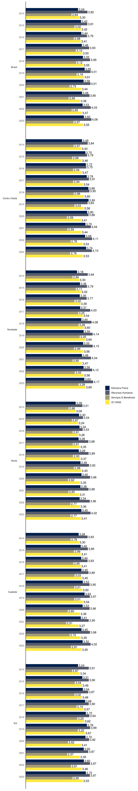
Indicadores de Desenvolvimento 2023
Nacional e por regiões
1 Indicador de Desenvolvimento do CRAS
1.1 Indicador de Desenvolvimento do CRAS, médias
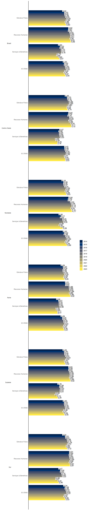


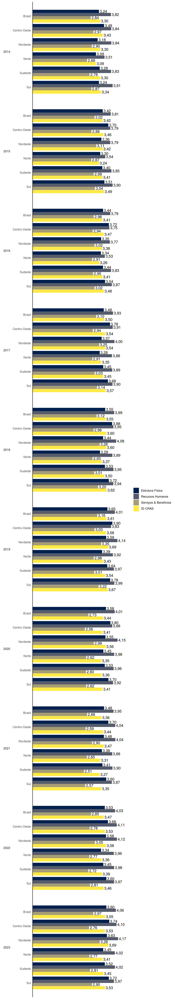
1.2 Indicador de Desenvolvimento do CRAS, quantitativo de CRAS em cada nível, 2023
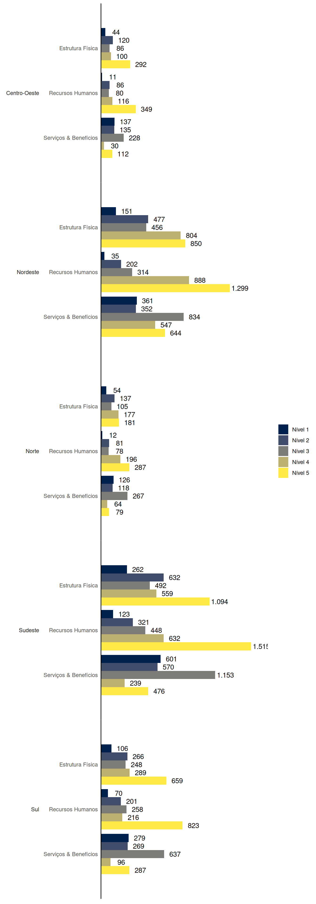


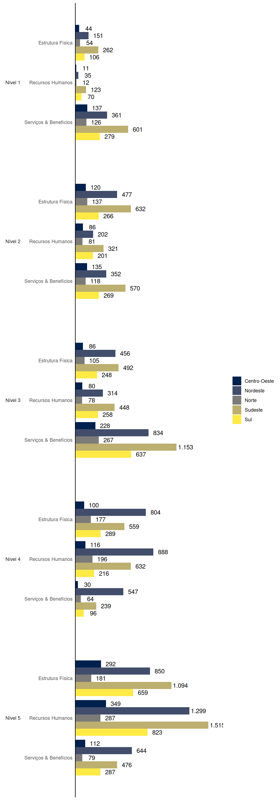
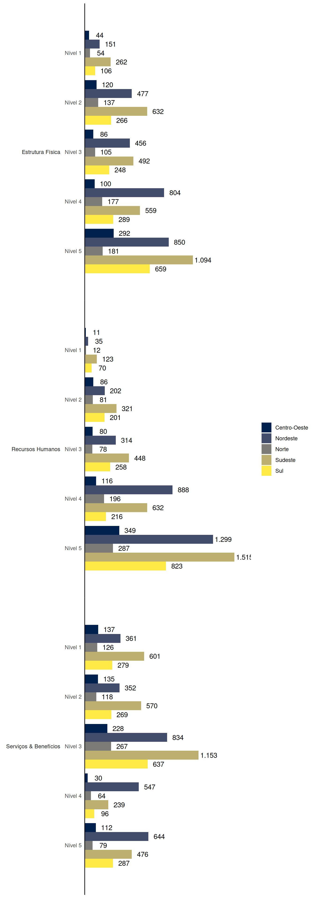

1.3 Indicador de Desenvolvimento do CRAS, percentuais de CRAS em cada nível, 2023
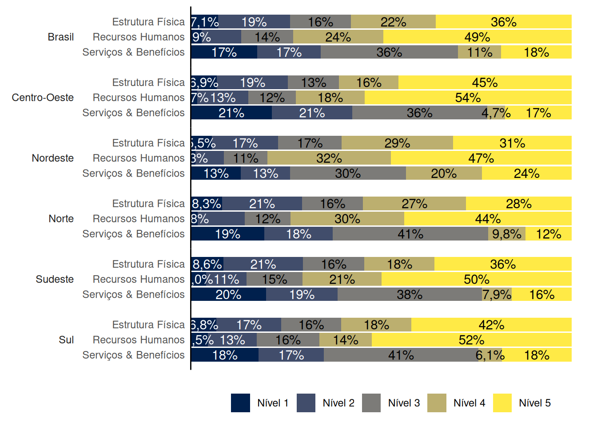

2 Indicador de Desenvolvimento do CREAS
2.1 Indicador de Desenvolvimento do CREAS, médias


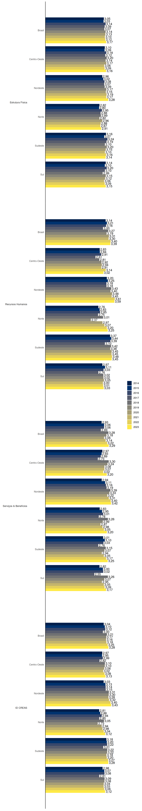


2.2 Indicador de Desenvolvimento do CREAS, quantitativo de CREAS em cada nível, 2023

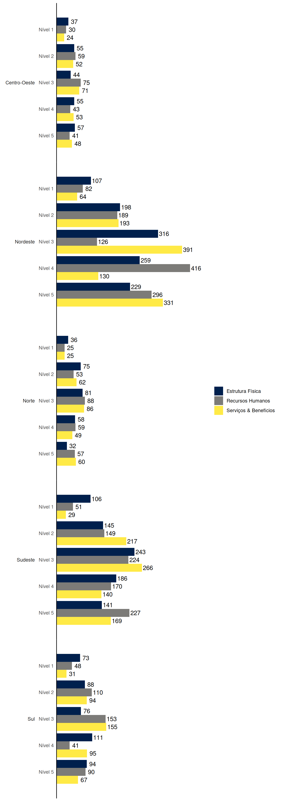


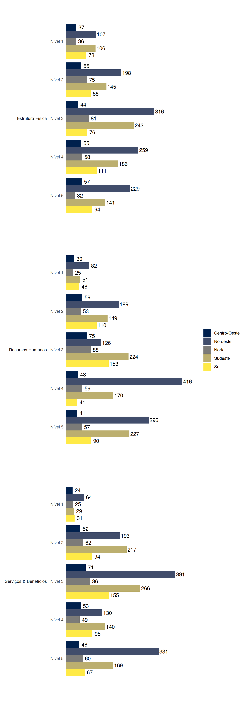

2.3 Indicador de Desenvolvimento do CREAS, percentuais de CREAS em cada nível, 2023
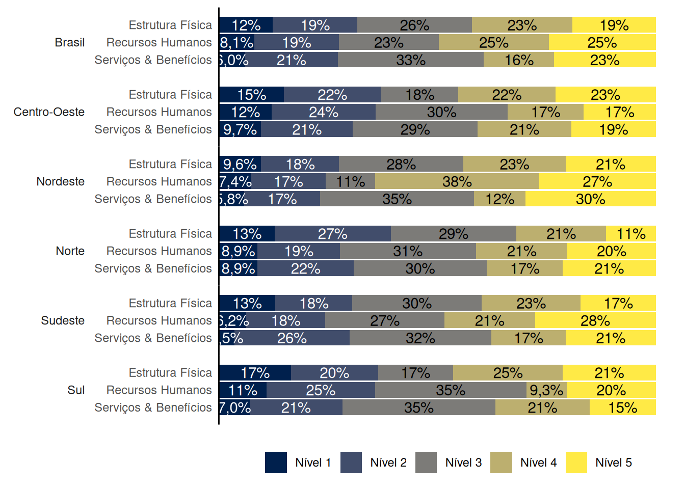

3 Indicador de Desenvolvimento dos Conselhos
3.1 Indicador de Desenvolvimento dos Conselhos, médias

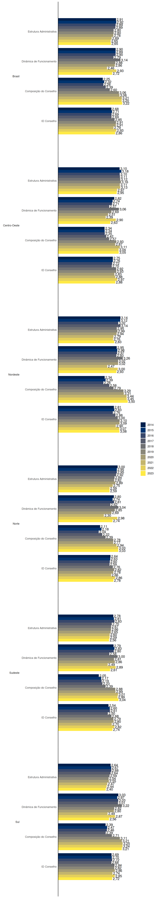
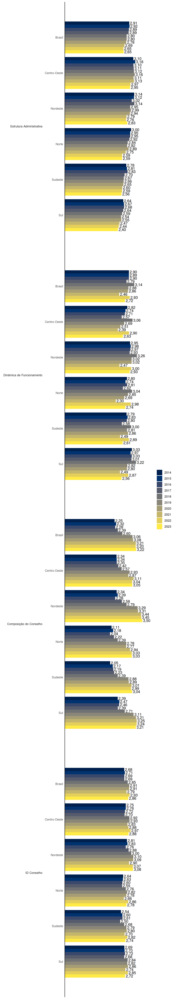
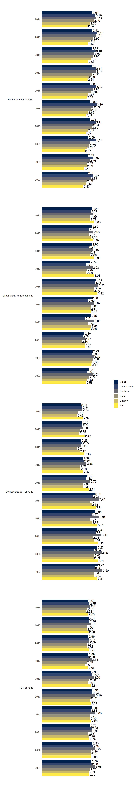

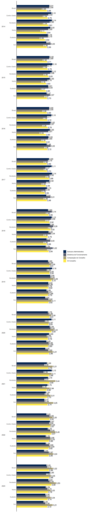
3.2 Indicador de Desenvolvimento dos Conselhos, quantitativo de Conselhos em cada nível, 2023


3.3 Indicador de Desenvolvimento dos Conselhos, percentuais de Conselhos em cada nível, 2023